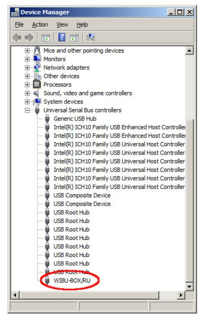

Installation Troubleshooting
General Troubleshooting
V-Ray could not obtain license
Here you can find the list of symptoms and their likely cause when V-Ray could not obtain the license. Please check the resolution part at the end of this section.
Symptoms:
When you assign V-Ray as the current renderer in 3ds Max, instead of the normal user interface in the Render Scene dialog, you get "Could not obtain a license (-200)” message under the V-Ray tab in Render setup. If you try to render you get "Could not obtain a license (-10061)"in the V-Ray messages window.
Cause:
No access to the V-Ray license server.
Symptoms:
When you assign V-Ray as the current renderer in 3ds Max, instead of the normal user interface in the Render Scene dialog, you get a "Could not obtain a license (-197)” message under the V-Ray tab in Render setup. If you try to render you get "Could not obtain a license (-98)"in the V-Ray messages window.
Cause:
No available license on the V-Ray license server.
Symptoms:
When you try to start V-Ray RT, an Active shade window pops up and disappears. There are no error messages in the V-Ray RT console.
Cause:
No access to the V-Ray license server or no available license on the V-Ray license server.
Symptoms:
When you start the V-Ray RT render server, there are no error messages in the V-Ray console, but when a job is sent to the V-Ray RT render server there is an error in the console "Could not obtain a license (10061)."
Cause:
No access to the V-Ray license server.
Symptoms:
When you start the V-Ray RT render server, there are no error messages in the V-Ray console, but when a job is sent to the V-Ray RT render server, the error in the console is "Could not obtain a license (-98)."
Cause:
There are no licenses of the appropriate type on the V-Ray license server. For example, the commercial version will give this error when there are only academic licenses on the dongle.
Symptoms:
When you try to render with V-Ray Standalone, an error message appears in the console: “Could not obtain a license (10061).”
Cause:
No access to the V-Ray license server.
Symptoms:
When you try to render with V-Ray Standalone, an error message appears in the console: “Could not obtain a license (-98).”
Cause:
No available license on the V-Ray license server.
Symptoms:
When you start V-Ray DR Spawner, there are no error messages, but when a job is sent to this machine there is an error in the vraylog.txt: "Could not obtain a license (10061)". On the machine from where you submitted the job in the V-Ray console you get: "Render Completed, render host is not responding. "
Cause:
No access to the V-Ray license server.
Symptoms:
When you start V-Ray DR Spawner, there are no error messages, but when a job is sent to this machine there is an error in the vraylog.txt "Could not obtain a license (-98)". On the machine from where you submitted the job in the V-Ray console you get "Render Completed, render host is not responding. "
Cause:
No available license on the V-Ray license server.
Resolution:
Please go through the check-list below:
A. Checking the V-Ray license server:
Please restart the machine with the V-Ray license server and dongle installed. Unplug the dongle and plug it again in a different USB port, preferably a USB 2.0 port. Make sure that Windows properly recognizes the dongle and doesn't show an error message. If you receive an error message, please refer to “V-Ray license server can't start” in this section.
Start the V-Ray license server from Windows Start menu > All Programs > Chaos Group > V-Ray Adv for 3dsMax> Licensing > Launch V-Ray license server
You may receive a message warning that the V-Ray license server is already running.
Open the link http://localhost:30304 in a web browser on the same machine.
This will open the V-Ray license server status web page. If it looks like the screenshot below, the license server is working.
B. Checking the available licenses on the license server:
After you ensuring the V-Ray license server is working, you need to check the available licenses. On the same machine, where the V-Ray license server is running, open the link http:// localhost :30304/ getstatus
Please refer to “V-Ray license server status” in the “Setting up your licenses” section for more information on the type of licenses you need to look for.
If you do not see the V-Ray 2.0 licenses, this means that your dongle has to be reprogrammed as described in “Dongle reprogramming” in the “Setting up your licenses” section.
If you don't see free licenses this means that all available licenses are in use and you can't have more concurrent users.
C. Checking the connection to the license server:
If V-Ray is on the same machine as the V-Ray license server, you can skip this step.
To make sure that nothing is blocking the connection to the license server on the machine where you want to run V-Ray, open the link http://<IP_address>:30304 in a web browser, where <IP_address> is the IP address of the machine with the V-Ray license server. If you get a web page like the one below, V-Ray can access the V-Ray license server from this machine. In the example screenshot below the IP address of the machine with the license server is 10.0.0.160
If you get an error message that the web page can't be accessed, then there is a network problem that prevents the connection to the V-Ray license server. If you have any firewall or antivirus software running on your machines, make sure they are not blocking the application's access to the network or blocking the communication on TCP/IP port 30304. Please contact your system administrator for more information.
D. Checking the V-Ray license settings:
On the machine where you want to use V-Ray, run the V-Ray license client configuration utility from Windows Start menu > Programs > Chaos Group > V-Ray for 3ds Max... > Licensing > Administration > Change V-Ray client license settings. In the dialog that appears, make sure that the IP address in the License server field at the Primary license server tab is entered correctly and that the connection port is 30304. If you modify any of these settings, you will need to restart 3ds Max.
 Note: If the V-Ray license server is running on the same machine as V-Ray you can use localhost or 127.0.0.1 in the License server field.
Note: If the V-Ray license server is running on the same machine as V-Ray you can use localhost or 127.0.0.1 in the License server field.
V-Ray license server can't start
Symptoms:
When you start the V-Ray license server it pops a dialog box like the one shown below:
Note: You will see this error message only if you start the V-Ray license server manually from the Windows Start menu and if it is not running as a service.
Cause:
This error message appears when the V-Ray license server cannot find a dongle attached to the machine.
Resolution:
Before you start, make sure the dongle is not plugged-in.
A. Uninstall the WIBU-KEY driver from Windows Control Panel.
B. Update your USB drivers to the latest version.
C. Restart your machine.
D. Download and install the latest WIBU-KEY drivers from
http://wibu.com/download_user.php.
E. Attach the dongle to a different USB port, preferably to USB 2.0. Make sure that Windows recognizes the dongle and doesn't show error messages. To verify that dongle is properly installed please go to the Windows Control Panel > System applet. Choose the Hardware tab and then click on the Device manager button. Expand the Universal serial bus controllers list and check for a WIBU-BOX/RU entry there:

If you do not find this entry, try plugging the dongle into a different USB port.
Dongle disconnects periodically
Symptoms:
The dongle is working for extended periods of time but periodically disappears for no apparent reason and is no longer detected by Windows as a USB device. This could cause the V-Ray license server to fail or V-Ray licenses to be refused.
Cause:
There can be a number of reasons related to the hardware configuration and Windows settings, like the Power options.
Resolution:
Please check your Windows Power Options, make sure that your USB devices are not powered off.
Try to plug the dongle into a different USB port on the same machine, preferably USB 2.0, and restart the V-Ray license server. If you still experience problems, try to install it on a different machine.
Missing V-Ray license server icon
Symptoms:
The V-Ray licensing server is running but there is no icon in the Windows System Tray.
Cause:
The icon is hidden by the Auto-hide unused icons option of the Windows System Tray or the V-Ray license server is registered as a Windows service.
Resolution:
A. If you have the Auto-hide unused icons option of the Windows System Tray, click on the double-arrow icon to expand the full list of icons.
B. If you still do not see the V-Ray licensing service icon, that means that the V-Ray licensing service is started as a Windows service and in that case it cannot show any graphical user interface. There is currently no resolution for this; you need to manage the V-Ray license service from the Windows Control Panel > Administrative tools > Services applet.
Updating dongles when the .rtu files are not associated properly
Symptoms:
WIBU-KEY drivers are properly installed, but double-click on the “.rtu” file doesn't update the dongle.
Cause:
The “.rtu” file is not associated properly with the WIBU-KEY drivers.
Resolution:
Please, first try the steps from “The license service does not start because no dongle is found” in this section. If this doesn't help proceed with the steps below:
A . Make sure that the dongle is plugged-in.
B. In the Windows Control Panel locate the WibuKey management tool and run it:
C. You need to start the Advanced Mode from the system menu by clicking onto the system icon in title bar (shown in red in the screenshot above). Go to the “WibuBox Update” tab.
D. Click Browse, specify the “.rtu” file, and press Apply.
V-Ray RT is crashing
Symptoms:
When rendering with V-Ray RT on CUDA/OpenCL, it crashes without showing a specific error message.
Cause:
The scene you are trying to render is too large and the graphics card memory is insufficient.
Resolution:
You can try to reduce the scene size by reducing the polygon count or by using lower resolution textures. V-Ray RT has an option called “Resize textures for GPU” that you can use to automatically resize textures during rendering on the GPU.
Alternately you can upgrade your graphics device with one containing more memory.
V-Ray RT is not rendering in OpenCL mode
Symptoms:
When rendering with V-Ray RT running in OpenCL mode, it takes too long for the render to begin and the “vray.exe” process is taking much memory.
Cause:
Your GPU drivers are unable to compile the OpenCL code needed to render the scene with your video card.
Resolution:
The best solution is to switch V-Ray RT to use CUDA.
Alternately you can try and find drivers for your graphics device that are capable of compiling the OpenCL code needed to run V-Ray RT on GPU. However the latest drivers are not always appropriate. This means that it may require some experimentation until you find the correct drivers.
WIBU-KEY Drivers Issues
Symptoms:
When installing the WIBU-KEY drivers you get the following error:
Symptoms:
When uninstalling the WIBU-KEY drivers you get the following error:

Symptoms:
When you plug-in the dongle or when you try to run V-Ray License Server you get one of the following errors:
or
Cause:
These errors are caused by the recently added Microsoft Update KB3004394 (added on December 2014 for Windows Root Certificate Program). Affected operating systems are Windows 7 and higher. This update breaks the WIBU-KEY driver.
There is a workaround given by WIBU here: http://www.wibu.com/nc/faq-wibukey/question/single/on-installing-wibukey-the-error-211-is-returned-what-can-i-do-229.html
After you complete the steps given by WIBU follow the instructions below in order to repair your WIBU-KEY driver
1. Unplug all WIBU-KEY dongles from the PC
2. Go to Start > Control Panel > "Programs and Features" and uninstall the WIBU-KEY drivers by double clicking on WibuKey Setup (WibuKey Remove)
3. Follow the instructions of the Uninstaller
4. Open an Windows Explorer and in the address bar enter "%systemroot%\inf"
5. Find the file wibukeyPCMCIA.inf and delete it.
6. Search for a file named oem*.inf that contains the term "WIBU". To do that enter "WIBU" in the search bar and when the search is complete click on the "File Contents" button:
7. The search may take a while but in the end it should find a file named oem*.inf. Delete that file and the file with the same name but an extension PNF (eg. if you found a file named oem123.inf delete oem123.pnf)
8. In Windows Explorer in the address bar enter "%systemroot%\system32\drivers"
9. Find and delete all WibuKey*.sys files.
10. Click Windows Start and in the Search field type "regedit"
11. This will open the Registry Editor. Find and delete the following keys":
in "HKEY_LOCAL_MACHINE\SYSTEM\CurrentControlSet\Services” if any of the folders "WIBUKEY", "WibuKey2" and "WibuKey2_64" exist, find them and delete them.
in "HKEY_LOCAL_MACHINE\SOFTWARE\" find and delete the folder "WIBU-SYSTEMS"
12. Restart the computer
13. After reboot please download the latest driver form the official WIBU Systems site, under "WibuKey for Users" section here http://www.wibu.com/downloads-user-software.html. Ensure that you have administrative rights.
14. Make sure that the dongle is NOT plugged in. Double click on the installation file and follow the instructions of the installer.
15. After the installation has finished plug in the dongle.
16. The "New Hardware found" dialog will appear and install the new hardware automatically.